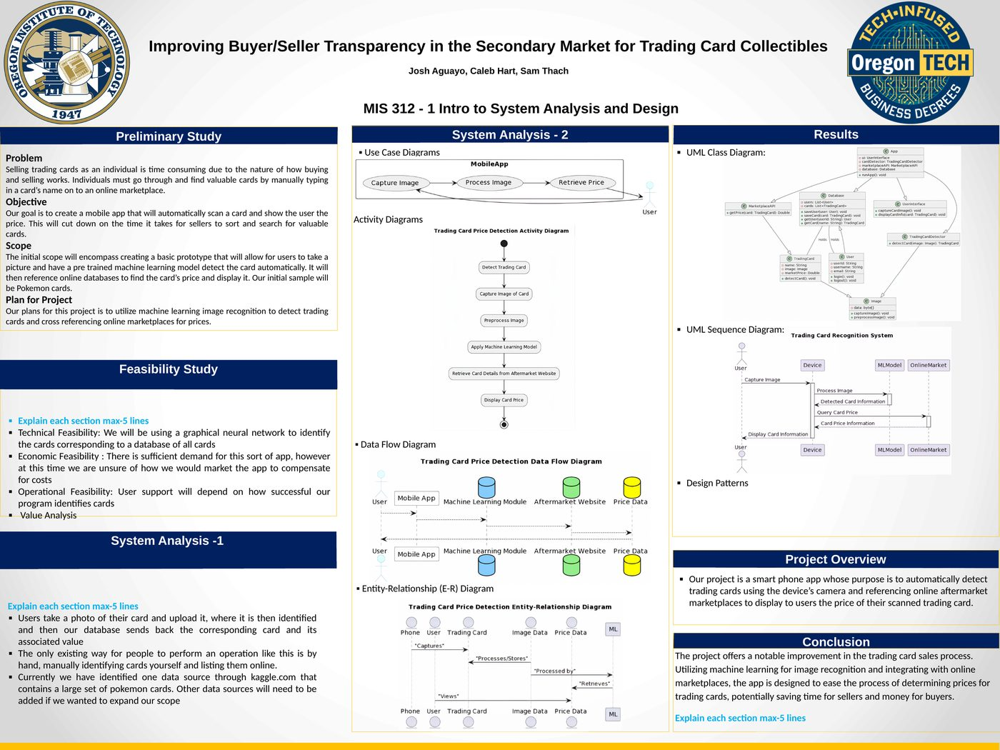

Systems Design
Designing a trading card price scanner
For MIS 312, Intro to System Analysis and Design, Josh Aguayo, Sam Thach and I designed an app to make selling trading cards less painful.
The problem
If you're selling a stack of cards, you have to find the valuable ones by typing each card's name into an online marketplace, one at a time. It's slow, and it's the main reason individual sellers leave money on the table.
The idea
A phone app that does it for you: take a picture of a card, a pre-trained machine learning model recognizes it, and the app looks up the card's price on aftermarket sites and shows it to you. We scoped the first version to Pokémon cards, using a large Pokémon card dataset we found on Kaggle.
The design
Most of the project was the analysis and design work that comes before code:
- A feasibility study covering technical, economic and operational feasibility
- A use case diagram: capture image, process image, retrieve price
- An activity diagram of the whole detection flow, from capture through preprocessing and the model to displaying the price
- A data flow diagram and an entity-relationship diagram
- A UML class diagram and a sequence diagram for the recognition system

The open question we flagged was economic: there's clear demand, but we hadn't worked out how to market the app well enough to cover its costs.
Project files
At a glance
- Course: MIS 312 Intro to System Analysis and Design, Oregon Institute of Technology
- Team: Josh Aguayo, Caleb Hart, Sam Thach
- Deliverables: Feasibility study; use case, activity, data flow, ER, UML class and sequence diagrams
- Scope: Pokémon cards first, with a Kaggle dataset